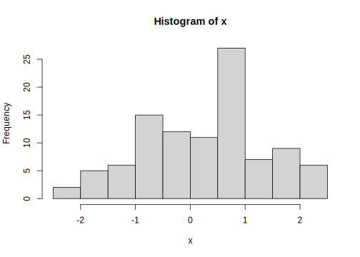

1.2 R 시작 및 작동 체크
실습: 설치된 R을 실행 후 보이는 R 콘솔(consle) 창에서 명령어를 실행하고 결과 확인
Figure 1.1 에서 > 기호는 R의 명령 프롬프트(command prompt) 임
- \(\rightarrow\) 컴퓨터가 사용자 명령을 기다리고 있다는 기호
- 현재 R session3 정보(R 설치 버전, locale, 로딩 packages) 출력
# R의 설치 버전 및 현재 설정된 locale(언어, 시간대) 및 로딩된 R package 정보 출력
sessionInfo() R version 4.0.3 (2020-10-10)
Platform: x86_64-pc-linux-gnu (64-bit)
Running under: Ubuntu 18.04.5 LTS
Matrix products: default
BLAS/LAPACK: /usr/lib/x86_64-linux-gnu/libopenblasp-r0.2.20.so
locale:
[1] LC_CTYPE=ko_KR.UTF-8 LC_NUMERIC=C
[3] LC_TIME=ko_KR.UTF-8 LC_COLLATE=ko_KR.UTF-8
[5] LC_MONETARY=ko_KR.UTF-8 LC_MESSAGES=ko_KR.UTF-8
[7] LC_PAPER=ko_KR.UTF-8 LC_NAME=C
[9] LC_ADDRESS=C LC_TELEPHONE=C
[11] LC_MEASUREMENT=ko_KR.UTF-8 LC_IDENTIFICATION=C
attached base packages:
[1] stats graphics grDevices utils datasets methods base
other attached packages:
[1] kableExtra_1.3.4 gtsummary_1.4.0 gt_0.3.0 glue_1.4.2
[5] forcats_0.5.1 stringr_1.4.0 dplyr_1.0.6 purrr_0.3.4
[9] readr_1.4.0 tidyr_1.1.3 tibble_3.1.2 ggplot2_3.3.3
[13] tidyverse_1.3.1 rmarkdown_2.8 knitr_1.33
loaded via a namespace (and not attached):
[1] Rcpp_1.0.6 svglite_2.0.0 lubridate_1.7.10
[4] lattice_0.20-41 assertthat_0.2.1 digest_0.6.27
[7] utf8_1.2.1 R6_2.5.0 cellranger_1.1.0
[10] backports_1.2.1 reprex_2.0.0 evaluate_0.14
[13] highr_0.9 httr_1.4.2 pillar_1.6.1
[16] rlang_0.4.11 readxl_1.3.1 rstudioapi_0.13
[19] jquerylib_0.1.4 Matrix_1.3-3 splines_4.0.3
[22] webshot_0.5.2 munsell_0.5.0 broom_0.7.6
[25] compiler_4.0.3 modelr_0.1.8 xfun_0.23
[28] systemfonts_1.0.2 pkgconfig_2.0.3 htmltools_0.5.1.1
[31] tidyselect_1.1.1 bookdown_0.22 viridisLite_0.4.0
[34] fansi_0.4.2 crayon_1.4.1 dbplyr_2.1.1
[37] withr_2.4.2 grid_4.0.3 jsonlite_1.7.2
[40] gtable_0.3.0 lifecycle_1.0.0 DBI_1.1.1
[43] magrittr_2.0.1 scales_1.1.1 cli_2.5.0
[46] stringi_1.6.2 broom.helpers_1.3.0 fs_1.5.0
[49] xml2_1.3.2 bslib_0.2.5 ellipsis_0.3.2
[52] generics_0.1.0 vctrs_0.3.8 tools_4.0.3
[55] hms_1.0.0 survival_3.2-7 yaml_2.2.1
[58] colorspace_2.0-1 rvest_1.0.0 haven_2.4.1
[61] sass_0.4.0 - 문자열 출력
#문자열 출력
print("Hello R") #문자열[1] "Hello R"
#기호는 주석의 시작을 의미하고 실제로 실행되지 않음 같은 행에서#뒤 내용의 코드 역시 실행되지 않음
a라는 변수에 숫자 9,b라는 변수에 숫자 7를 할당 후 출력
# 수치형 값(scalar)을 변수에 할당(assign)
# 여러 명령어를 한줄에 입력할 때에는 세미콜론(;)으로 구분
a = 9; b = 7
a[1] 9b[1] 7- 변수
a와b의 사칙연산
a+b; a-b; a*b; a/b[1] 16[1] 2[1] 63[1] 1.285714- R 그래픽 맛보기: 정규분포로부터 난수 100개 생성 후 생성된 데이터에 대한 히스토그램 작성
# 난수 생성 시 값은 매번 달라지기 때문에 seed를 주어 일정값이 생성되도록 고정
# "="과 "<-"는 모두 동일한 기능을 가진 할당 연산자임
#평균이 0 이고 분산이 1인 정규분포에서 난수 100개 생성
set.seed(12345) # random seed 지정
x <- rnorm(100) # 난수 생성
hist(x) # 히스토그램

Figure 1.2: 정규분포 100개의 히스토그램
R 명령어 또는 전체 프로그램 소스 실행 시 매우 빈번히 오류가 나타나는데, 이를 해결할 수 있는 가장 좋은 방법은 앞에서 언급한 Google을 이용한 검색 또는 R 설치 시 자체적으로 내장되어 있는 도움말을 참고하는 것이 가장 효율적임.
| 도움말 보기 명령어 | 설명 | 사용법 |
|---|---|---|
help 또는 ?
|
도움말 시스템 호출 |
help(함수명)
|
help.search 또는 ??
|
주어진 문자열을 포함한 문서 검색 |
help.search(pattern)
|
example
|
topic의 도움말 페이지에 있는 examples section 실행 |
example(함수명)
|
vignette
|
topic의 pdf 또는 html 레퍼런스 메뉴얼 불러오기 |
vignette(패키지명 또는 패턴)
|
Vignette 의 활용: 데이터를 기반으로 사용하고자 하는 패키지의 실제 활용 예시를 작성한 문서이기 때문에 초보자들이 R 패키지 활용에 대한 접근성을 높혀줌.
vignette()browseVignettes()
현재 실행되고 있는 R의 작업공간↩︎